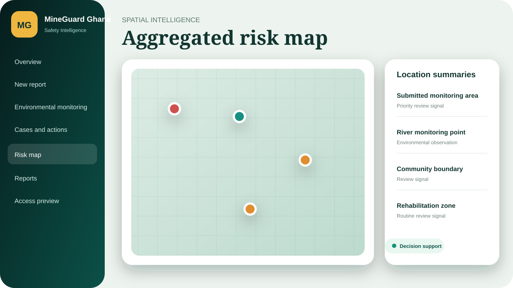
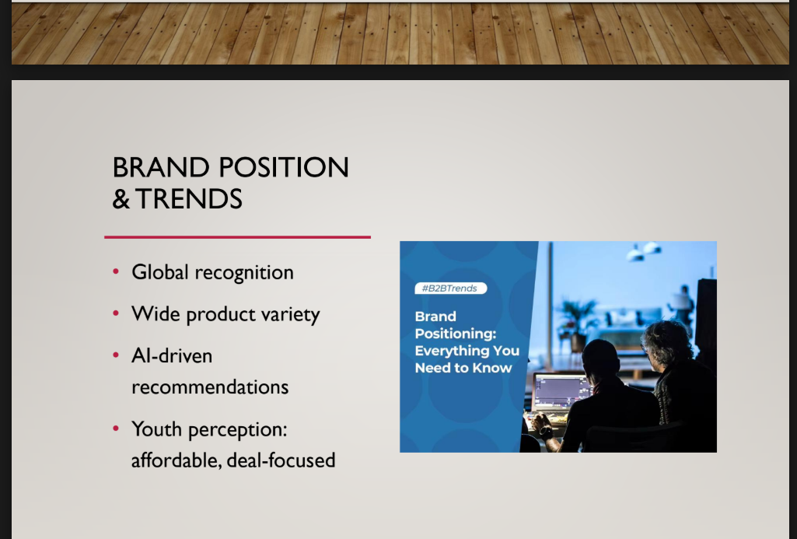
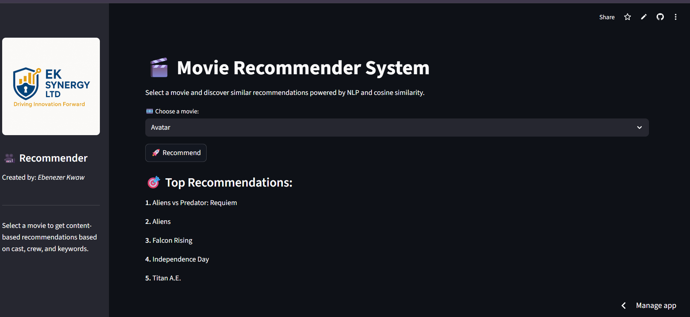
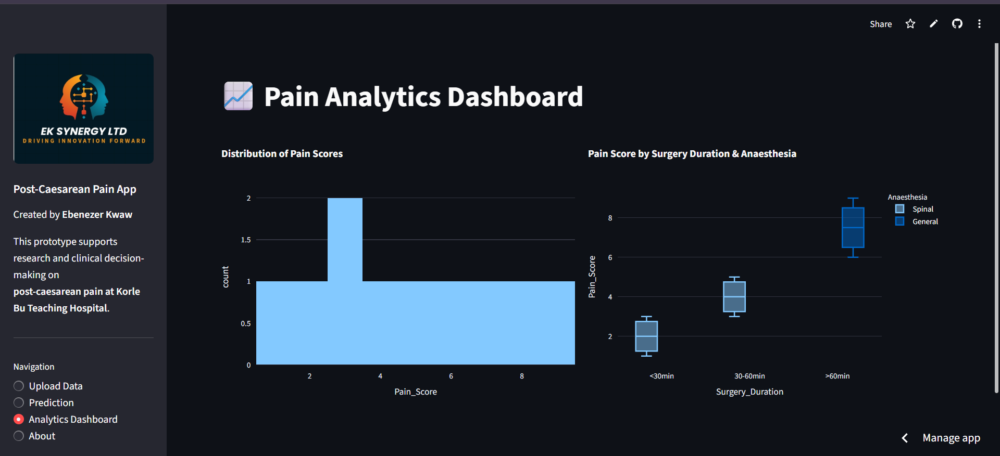

Insights by Ebenezer Kwaw
Ideas for stronger systems.
Practical perspectives at the intersection of public health, data, artificial intelligence, digital strategy and continuous learning.
Latest writing
Articles and perspectives
Evidence led thinking shaped by frontline experience, technology and implementation realities.

29 · Safety and Environmental Technology · Case StudyMineGuard Ghana Safety and Environmental Intelligence
A working MVP connecting structured field reporting, environmental observations, corrective actions, spatial signals and accountable management reporting.
Read case study → 11 · Digital Marketing and Growth · Case Study
11 · Digital Marketing and Growth · Case Study
Eco-Me Africa Digital Growth Strategy
A digital audit and growth strategy for a menstrual-health, sustainability and women’s-empowerment organization.
Read case study → 12 · SEO and Website Optimization · Case Study
12 · SEO and Website Optimization · Case Study
GH Wheels SEO and WordPress Optimization
A practical website and on-page SEO project focused on improving the structure, discoverability and user journey of an automotive platform.
Read case study → 13 · SEO and Web Development · Case Study
13 · SEO and Web Development · Case Study
Wonderbuild SEO and Website Optimization
A responsive website and SEO project designed to improve how Wonderbuild presents its interlocking-brick solutions and converts interest into enquiries.
Read case study → 14 · SEO and Content Strategy · Case StudyM-KOPA SEO and Content Growth System
A portfolio strategy demonstrating how competitor intelligence and content systems can support organic acquisition for an African fintech brand.
Read case study → 15 · Digital Marketing Operations · Case Study
15 · Digital Marketing Operations · Case Study
Multi-Client Digital Marketing at Amplify
A results-focused portfolio covering local SEO, Google Business Profile management, paid search, paid social and agency content across six accounts.
Read case study → 16 · Email Marketing · Case Study
16 · Email Marketing · Case Study
Valentine’s Email Marketing Campaign
A seasonal email campaign concept designed to turn gifting intent into a simple mobile-first purchase journey.
Read case study →
17 · Social Media Strategy · Case StudyAlibaba Youth Social Media Plan
An independent social-media planning exercise focused on younger, mobile-first and value-conscious e-commerce audiences.
Read case study → 18 · Integrated Marketing Campaign · Case Study
18 · Integrated Marketing Campaign · Case Study
Christopher John Rogers Collection Launch Campaign
An independent integrated campaign plan connecting social media, paid advertising, email acquisition and e-commerce conversion for a fashion collection launch.
Read case study → 19 · Digital Growth Strategy · Case Study
19 · Digital Growth Strategy · Case Study
Hotfro Africa Digital Marketing Strategy
A 90-day digital growth system for a Ghanaian natural-haircare brand, connecting education, proof, products, social content, WhatsApp and a conversion-focused website.
Read case study → 20 · SEO, AEO and Lead Generation · Case Study
20 · SEO, AEO and Lead Generation · Case Study
Wonderbuild AI Search Visibility Strategy
A digital strategy for a Ghanaian interlocking-brick company combining website improvement, SEO, AI search visibility, authority content and lead generation.
Read case study → 21 · Machine Learning and NLP · Case Study
21 · Machine Learning and NLP · Case Study
Customer Support Ticket Classifier
An NLP system designed to classify support tickets automatically and reduce manual routing work.
Read case study → 22 · Machine Learning and Fintech · Case Study
22 · Machine Learning and Fintech · Case Study
Loan Default Prediction Platform
A machine-learning prototype for estimating loan-default risk through an interactive decision-support interface.
Read case study →
23 · Machine Learning and Recommender Systems · Case StudyMovie Recommendation System
A content-based recommendation prototype that suggests similar films using movie metadata.
Read case study → 24 · Public Health Machine Learning · Case Study
24 · Public Health Machine Learning · Case Study
ITN Usage Prediction Dashboard
A malaria-prevention dashboard exploring predicted insecticide-treated net use, risk segmentation, trends and intervention scenarios.
Read case study →
25 · Maternal Health Analytics · Case StudyPost-Caesarean Pain Prediction and Analytics
A research-support application for collecting, analyzing and exploring the risk of moderate-to-severe pain after caesarean section.
Read case study → 26 · Public Health Informatics · Case Study
26 · Public Health Informatics · Case Study
SurveilAI District Outbreak Reporting System
A district-level prototype for case capture, unique identifiers, dashboard summaries and exportable surveillance records.
Read case study → 27 · UI/UX and Public Health Systems · Case Study
27 · UI/UX and Public Health Systems · Case Study
GIPHEP Public Health Emergency Platform
A UI/UX concept for a national public-health emergency intelligence suite supporting surveillance, risk assessment and coordinated response.
Read case study → 28 · UI/UX and Nutrition Analytics · Case Study
28 · UI/UX and Nutrition Analytics · Case Study
AI Nutrition Ghana Dashboard
A UI/UX case study for automating questionnaire analysis and presenting nutrition-behavior and AI-adoption patterns.
Read case study → 07 · Digital Health
07 · Digital Health
Why Digital Health Literacy Matters for Public Health Professionals in Africa
The practical skills that turn digital health tools into trustworthy data, responsible use and better decisions.
Read article → 06 · AI in Public Health
06 · AI in Public Health
Why AI Projects in Public Health Fail and How Workflow First Design Can Make Them Useful
A practical guide to designing artificial intelligence around real decisions, people, data and public health workflows.
Read article → 01 · Artificial Intelligence
01 · Artificial Intelligence
Responsible AI must begin with the realities of implementation
Why useful health technology starts with workflows, evidence and people, not novelty.
Read article → 02 · Health Data
02 · Health Data
Moving from data collection to actionable intelligence
A practical lens for making routine information more useful to programme teams.
Read article → 03 · Career & Continuous Learning
03 · Career & Continuous Learning
Building a Multidisciplinary Career Across Health and Technology
How public health, research, data, AI and communication can become connected capabilities serving one mission.
Read article → 04 · Answer Engine Optimization
04 · Answer Engine Optimization
Should Every Blog Post Have an FAQ Section for AEO?
A practical guide to deciding when FAQ sections support answer engine optimization, user intent and content clarity, and when they add unnecessary clutter.
Read article → 05 · Public Health Data
05 · Public Health Data
From Dashboard to Decision: Why Public Health Data Tools Must Fit Real Workflows
A practical framework for designing public health dashboards that fit real workflows, strengthen interpretation and support timely decisions.
Read article →